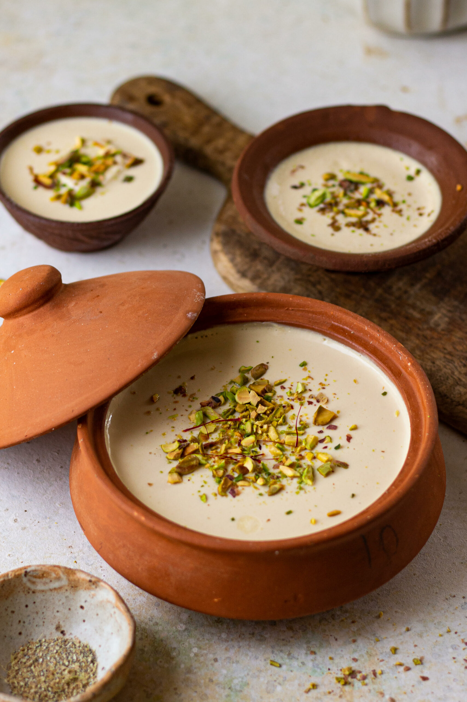

Home
Mishti-Doi

Steps to make Mishti Doi
Full-Fat Milk: 1 liter (or ~4 cups), which is essential for a rich and creamy texture.
Sugar or Jaggery
Curd (Yogurt) Starter: 2 to 3 tablespoons of plain, unflavored yogurt